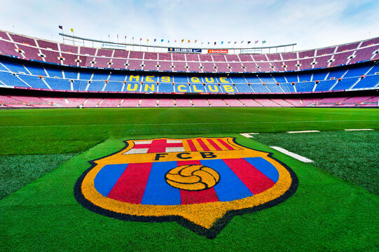

Bayern Leverkusen
O Bayer Leverkusen ostenta como principais conquistas um título da Bundesliga em 2023–24 e uma Copa da Alemanha em 1992–93. Em nível continental, já venceu uma Copa da UEFA e foi vice-campeão da Liga dos Campeões da UEFA. O 1. FC Köln é o seu principal rival.
Real Madrid
O Real Madrid Club de Fútbol, conhecido simplesmente como Real Madrid, é um dos clubes de futebol mais renomados e bem-sucedidos do mundo. Fundado em 1902 em Madrid, Espanha, o clube teve um papel fundamental na história do futebol mundial.
A história do Real Madrid é marcada por sucessos tanto nacionais quanto internacionais. No cenário doméstico, o clube ganhou inúmeras vezes o Campeonato Espanhol, a Copa do Rei e outros torneios locais.
No entanto, é no palco internacional que o Real Madrid realmente se destaca. O clube tem uma longa tradição de sucesso na Liga dos Campeões da UEFA (anteriormente conhecida como Copa dos Campeões da Europa), sendo o time mais vitorioso na história do torneio. O Real Madrid conquistou a Liga dos Campeões em várias ocasiões, estabelecendo-se como um dos gigantes do futebol europeu.

Barcelona
O Barcelona Football Club, comumente conhecido como Barcelona ou Barça, é um dos clubes de futebol mais icônicos e bem-sucedidos do mundo. Fundado em 1899 em Barcelona, Espanha, o clube tem uma rica história e uma base de fãs globalmente apaixonada.
Ao longo dos anos, o Barcelona estabeleceu-se como um dos principais clubes tanto no cenário doméstico quanto internacional. No âmbito nacional, o clube conquistou inúmeras vezes a La Liga, a principal liga de futebol da Espanha, assim como a Copa do Rei e outros torneios locais.
.
{kind=link}
{kind=link}
{kind=link}